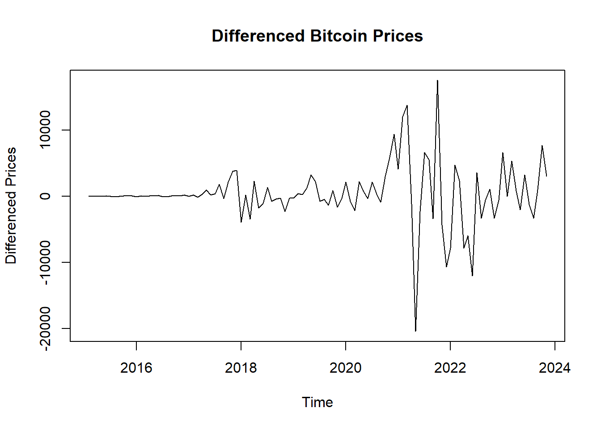
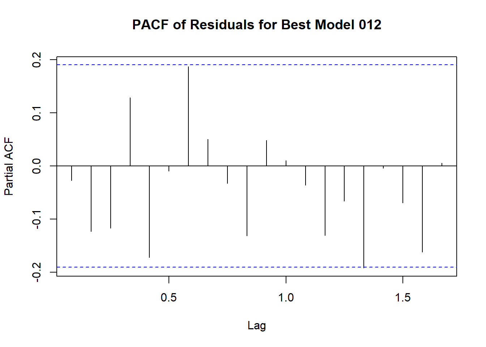

Chapter 4 ARIMA Model
##
## Attaching package: 'kableExtra'## The following object is masked from 'package:dplyr':
##
## group_rows## Registered S3 method overwritten by 'quantmod':
## method from
## as.zoo.data.frame zoo## Loading required package: zoo##
## Attaching package: 'zoo'## The following objects are masked from 'package:base':
##
## as.Date, as.Date.numeric#load csv from github(uploaded for Assignment_02_Group_04)
BitCoin <- read.csv("https://raw.githubusercontent.com/shakibed/Final_Project_Group_04/main/BTC-Monthly.csv", stringsAsFactors = FALSE)
#convert it to date
BitCoin$Date <- as.Date(BitCoin$Date)
#it shows no missing value found
# Copy the bitcoin data frame to a new data frame named BitCoin_df
BitCoin_df<- BitCoin
# Create 'month' and 'year' columns in the BitCoin_df data frame
BitCoin_df <- BitCoin_df %>%
mutate(
month = format(Date, "%m"),
year = format(Date, "%Y")
) # Convert to time series object
bitcoin_ts <- ts(BitCoin_df$Close, start = c(as.numeric(format(min(BitCoin_df$Date), "%Y")), as.numeric(format(min(BitCoin_df$Date), "%m"))), frequency = 12)- Create ACF & PACF plots of the time series data set with maximum lag of 24. Explain the outcome and comment on the dataset’s nature.
- Perform ADF test. Explain the outcome.
- Explain if the dataset is stationary or not.
- Create QQ plot & perform Shapiro-Wilk test.
- If the dataset is not stationary, then make it stationary by differencing. Show a plot of the dataset after differencing and perform ADF test on differenced dataset to check stationarity again.
- Perform ACF & PACF test to find the probable model candidates. Explain the outcome of the plots.
- Perform EACF test to comprehensively test the possible candidate models. Mention the models that you have selected for modeling (select at least 3 models).
- Estimate the ARIMA parameters by creating the above selected models. Perform coeftest on each model. Explain the outcome from the level of significance.
- Evaluate the models through AIC & BIC tests.
- From outcome of above two steps select best two models. Explain why you have chosen those two models.
- Assess the chosen two models through accuracy test.
- Perform residual analysis of the two models and create line & scatter plot of the residuals. Explain the outcome.
- Create a histogram plot of the residuals of the two models. Explain the outcome.
- Create ACF & PACF plots of residuals of the two models. Explain the outcome.
- Create QQ plot of residuals of the two models. Explain the outcome.
- Perform Shapiro-Wilk test on residuals of the two models. Explain the outcome.
- Select the best model from the above two models using the outcome of all the above analysis. This is going to be your final model.
4.1 Create ACF & PACF plots of the time series data set with maximum lag of 24. Explain the outcome and comment on the dataset’s nature.
# ACF & PACF plots with maximum lag of 24
acf(bitcoin_ts, lag.max = 24, main = "ACF of Bitcoin Prices")
pacf(bitcoin_ts, lag.max = 24, main = "PACF of Bitcoin Prices")

Explanation of ACF Plot
The ACF (Autocorrelation Function) plot provided shows the autocorrelation of Bitcoin prices over different lags up to 24 days.
The first few lags show very high autocorrelation, close to 1.0. This indicates that Bitcoin prices are strongly correlated with their recent past values.
The autocorrelation values gradually decline as the lag increases. This tells us that the data has a pattern that lasts a while and what happened in the past continues to influence what happens in the future for a longer period.
Nature of the Dataset:
- Non-Stationarity: The high initial autocorrelation and gradual decline suggest that the Bitcoin price series is likely non-stationary. Non-stationary time series often exhibit trends, seasonal patterns, or other forms of long-term dependencies.
- Trend: The high autocorrelation at lag 1 and significant autocorrelation at subsequent lags imply that the series likely has a trend component.
- Seasonality: The plot does not clearly indicate strong seasonality, but further investigation might be needed to confirm this.
In summary, - We identified data is likely non-stationary with a trend. - Differencing and possibly transformation (e.g., logarithms) might be necessary to stabilize the mean and variance before applying forecasting models.
Explanation of PACF Plot
The PACF (Partial Autocorrelation Function) plot of Bitcoin prices provides insights into the time series data’s nature, after removing the effects of intervening values. - The PACF at lag 1 is significantly high, close to 0.8. This indicates a strong direct relationship between the current value and its immediate past value. - After lag 1, the partial autocorrelations drop significantly and most of them are within the 95% confidence interval .This implies that differencing the series (likely once, i.e., d=1d=1) may help in achieving stationarity.
- The PACF does not show significant spikes at higher lags, which suggests that the direct influence of past values decreases quickly after the first lag.
Nature of the Dataset:
Non-Stationarity:Similar to the ACF plot, the high initial value in the PACF suggests that the series is non-stationary and likely has a trend component.
Seasonality: The absence of significant spikes at higher lags suggests that there is no strong seasonality in the dataset.
In summary,
- The PACF plot supports the earlier observation that the Bitcoin price series is non-stationary with a trend and follows an autoregressive process, primarily influenced by its immediate past value.
- Using differencing to make the series stationary, followed by fitting an ARIMA model, should yield a good forecasting model.
- The high initial PACF value suggests that an AR(1) term will be significant in the model.
4.2 Perform ADF test. Explain the outcome.
##
## Augmented Dickey-Fuller Test
##
## data: bitcoin_ts
## Dickey-Fuller = -2.5743, Lag order = 4, p-value = 0.3385
## alternative hypothesis: stationaryIn summary,Augmented Dickey-Fuller Test
The Augmented Dickey-Fuller (ADF) test is used to check if a time series is stationary.
The time series data is likely not stationary.
Since the p-value is greater than 0.05 we fail to reject the null hypothesis. Means time series is non-stationary.
differencing might be needed to make it stationary before further analysis.
Outcome: - This means that we do not have enough evidence to say that the Bitcoin time series is stationary.
4.3 Explain if the dataset is stationary or not.
Based on the results from the ACF, PACF, and Augmented Dickey-Fuller (ADF) tests, we can conclude the following:
ACF and PACF Results:
ACF: The high autocorrelation at the initial lags and gradual decline suggest a persistent pattern and trend in the data, indicating non-stationarity. PACF: The significant spike at lag 1 and quick drop-off thereafter further support the presence of a trend and non-stationarity. ADF Test Result:
p-value = 0.3385: This high p-value indicates that we fail to reject the null hypothesis of the ADF test, suggesting that the Bitcoin price series is non-stationary. Conclusion:
Non-Stationary Data: The combined evidence from the ACF, PACF, and ADF tests strongly indicates that the Bitcoin price series is non-stationary and exhibits a trend component. Differencing the series is likely required to achieve stationarity for further analysis and modeling.
4.4 Create QQ plot & perform Shapiro-Wilk test.
# Perform QQ plot and Shapiro-Wilk test
qqnorm(bitcoin_ts, main = "QQ Plot of Bitcoin Prices")
qqline(bitcoin_ts, col = "red")##
## Shapiro-Wilk normality test
##
## data: bitcoin_ts
## W = 0.83358, p-value = 1.258e-09Code explanation here
- The Bitcoin prices do not follow a normal distribution.
- The points on the left side of the plot (lower quantiles) and right side (higher quantiles) deviate significantly from the red line,and the clustering indicate that the data is skewed and has heavier tails than a normal distribution.
- The points in the middle are somewhat closer to the red line but still show noticeable deviation. This suggests that the central part of the distribution does not perfectly follow a normal distribution.
4.5 If the dataset is not stationary, then make it stationary by differencing. Show a plot of the dataset after differencing and perform ADF test on differenced dataset to check stationarity again.
# If the dataset is not stationary, then make it stationary by differencing
bitcoin_diff <- diff(bitcoin_ts, differences = 1)
# Plot the differenced data
plot(bitcoin_diff, main = "Differenced Bitcoin Prices", ylab = "Differenced Prices", xlab = "Time")
## Warning in adf.test(bitcoin_diff): p-value smaller than printed p-value##
## Augmented Dickey-Fuller Test
##
## data: bitcoin_diff
## Dickey-Fuller = -5.1599, Lag order = 4, p-value = 0.01
## alternative hypothesis: stationaryStationarity: - Given a very small p-value (typically less than 0.05) from the ADF test, we reject the null hypothesis, indicating that the series is stationary. - The differencing appears to have stabilized the mean of the time series, making it more suitable for further time series modeling techniques. - The plot appears to be centered around zero and does not exhibit a clear trend or seasonal pattern. - Stationarity means the statistical properties of the series (like mean and variance) are constant over time.
4.6 Perform ACF & PACF test to find the probable model candidates. Explain the outcome of the plots.
# ACF & PACF plots of differenced data to find the probable model candidates
acf(bitcoin_diff, lag.max = 24, main = "ACF of Differenced Bitcoin Prices")Code explanation here
Stationarity: The ACF plot of the differenced Bitcoin prices shows a significant autocorrelation at lag 1 and quickly diminishing autocorrelations at higher lags. This suggests that the first differencing has effectively made the series stationary and has successfully removed trends and seasonality
4.7 Perform EACF test to comprehensively test the possible candidate models. Mention the models that you have selected for modeling (select at least 3 models).
# Perform EACF test (Enhanced ACF test)
# Install and load eacf package if necessary
# install.packages("TSA")
library(TSA)## Registered S3 methods overwritten by 'TSA':
## method from
## fitted.Arima forecast
## plot.Arima forecast##
## Attaching package: 'TSA'## The following object is masked from 'package:readr':
##
## spec## The following objects are masked from 'package:stats':
##
## acf, arima## The following object is masked from 'package:utils':
##
## tar## AR/MA
## 0 1 2 3
## 0 o o o o
## 1 x x o o
## 2 o x o o
## 3 x o x oCode explanation here
The EACF (Extended Autocorrelation Function) table is used in the identification of ARMA (AutoRegressive Moving Average) models. Based on the EACF, we select the ARIMA parameters of models (0,1,1), (0,1,2), (1,1,2), (2,1,2)
This is just one method for model identification. we will use other diagnostics and criteria, such as AIC (Akaike Information Criterion) or BIC (Bayesian Information Criterion), to confirm the best model fit.
4.8 Estimate the ARIMA parameters by creating the above selected models. Perform coeftest on each model. Explain the outcome from the level of significance.
##
## z test of coefficients:
##
## Estimate Std. Error z value Pr(>|z|)
## ma1 -1.000000 0.028907 -34.594 < 2.2e-16 ***
## ---
## Signif. codes: 0 '***' 0.001 '**' 0.01 '*' 0.05 '.' 0.1 ' ' 1##
## z test of coefficients:
##
## Estimate Std. Error z value Pr(>|z|)
## ma1 -0.735344 0.099068 -7.4227 1.148e-13 ***
## ma2 -0.264656 0.095704 -2.7654 0.005686 **
## ---
## Signif. codes: 0 '***' 0.001 '**' 0.01 '*' 0.05 '.' 0.1 ' ' 1##
## z test of coefficients:
##
## Estimate Std. Error z value Pr(>|z|)
## ar1 -0.11182 0.23669 -0.4724 0.636606
## ma1 -0.64103 0.21104 -3.0374 0.002386 **
## ma2 -0.35894 0.20954 -1.7130 0.086706 .
## ---
## Signif. codes: 0 '***' 0.001 '**' 0.01 '*' 0.05 '.' 0.1 ' ' 1##
## z test of coefficients:
##
## Estimate Std. Error z value Pr(>|z|)
## ar1 0.292715 0.372707 0.7854 0.432234
## ar2 -0.207007 0.118281 -1.7501 0.080095 .
## ma1 -1.057770 0.378124 -2.7974 0.005151 **
## ma2 0.057778 0.377031 0.1532 0.878206
## ---
## Signif. codes: 0 '***' 0.001 '**' 0.01 '*' 0.05 '.' 0.1 ' ' 1ARIMA Model Significance Summary: - ARIMA(0, 1, 1): The MA(1) term is highly significant (p-value < 2.2e-16), indicating a strong influence on the model. - ARIMA(0, 1, 2): Both MA(1) and MA(2) terms are significant (p-values 1.148e-13 and 0.005686, respectively), suggesting the inclusion of both terms improves the model fit. - ARIMA(1, 1, 2): The MA(1) term is significant (p-value = 0.002386), while AR(1) and MA(2) terms are not significant, implying a moderate model fit. - ARIMA(2, 1, 2): The MA(1) term is significant (p-value = 0.005151), but AR(1), AR(2), and MA(2) terms are not, indicating a less reliable model.
4.9 Evaluate the models through AIC & BIC tests.
# Extract AIC and BIC values
aic_values <- c(AIC(model_011), AIC(model_012), AIC(model_112),AIC(model_212))
bic_values <- c(BIC(model_011), BIC(model_012), BIC(model_112), BIC(model_212))
# Create a data frame
print_all_model_AIC_BIC <- data.frame(
Model = c("model_011", "model_012", "model_112", "model_212"),
AIC = aic_values,
BIC = bic_values
)
print(print_all_model_AIC_BIC)## Model AIC BIC
## 1 model_011 2070.910 2076.218
## 2 model_012 2066.781 2074.743
## 3 model_112 2068.555 2079.171
## 4 model_212 2068.457 2081.727Code explanation here - Based on AIC, Model 2 (ARIMA(2, 1, 2)) is the best model, as it has the lowest AIC value, suggesting a good fit to the data. - Based on BIC, Model 3 (ARIMA(0, 1, 1)) is the best model, as it has the lowest BIC value, indicating it strikes the best balance between fit and simplicity. - Thus, Model 2 is preferable for a better fit, but if simplicity and avoiding overfitting are more important, Model 3 would be the better choice.
4.10 From outcome of above two steps select best two models. Explain why you have chosen those two models.
Code explanation here
4.11 Assess the chosen two models through accuracy test.
# Assess the chosen two models through accuracy test
model_012 = Arima(bitcoin_diff, order = c(0, 1, 2))
model_212 = Arima(bitcoin_diff, order = c(2, 1, 2))
accuracy_012 <- accuracy(model_012)
accuracy_212 <- accuracy(model_212)
df_models <- data.frame(
rbind(accuracy_012, accuracy_212)
)
colnames(df_models) <- c("ME", "RMSE", "MAE", "MPE", "MAPE", "MASE", "ACF1")
rownames(df_models) <- c("ARIMA(0,1,2)", "ARIMA(2,1,2)")
kable(df_models, digits = 2, formats="html", row.names = TRUE) %>%
kable_styling(full_width = F, font_size = 12, position = "center")| ME | RMSE | MAE | MPE | MAPE | MASE | ACF1 | |
|---|---|---|---|---|---|---|---|
| ARIMA(0,1,2) | 119.83 | 4312.32 | 2490.54 | -133.07 | 345.53 | 0.60 | -0.03 |
| ARIMA(2,1,2) | 130.27 | 4255.79 | 2424.69 | -135.03 | 343.44 | 0.59 | -0.01 |
Code explanation here
4.11.1 Perform residual analysis of the two models and create line & scatter plot of the residuals. Explain the outcome.
# Extract residuals from the models
residuals_012 <- residuals(model_012)
residuals_212 <- residuals(model_212)
# Set up the plotting area to have 2 rows and 2 columns for 4 plots
par(mfrow = c(1, 1))
# Plot 1: Time series plot of standardized residuals for Model 012 (line plot)
plot(residuals_012,
xlab = "Year Index", ylab = "Residuals",
main = "Time series plot of standardized residuals - Model 012",
type = "l", col = "blue")
abline(h = 0, col = "red", lty = 2)
# Plot 2: Scatter plot of standardized residuals for Model 012
plot(residuals_012,
xlab = "Year Index", ylab = "Residuals",
main = "Scatter plot of standardized residuals - Model 012",
pch = 16, col = "blue")
abline(h = 0, col = "red", lty = 2)
# Plot 3: Time series plot of standardized residuals for Model 212 (line plot)
plot(residuals_212,
xlab = "Year Index", ylab = "Residuals",
main = "Time series plot of standardized residuals - Model 212",
type = "l", col = "green")
abline(h = 0, col = "red", lty = 2)
# Plot 4: Scatter plot of standardized residuals for Model 212
plot(residuals_212,
xlab = "Year Index", ylab = "Residuals",
main = "Scatter plot of standardized residuals - Model 212",
pch = 16, col = "green")
abline(h = 0, col = "red", lty = 2)
Code explanation here
4.12 Create a histogram plot of the residuals of the two models. Explain the outcome.
# Histogram plot of the residuals
ggplot() +
geom_histogram(aes(x = residuals_012), binwidth = 500, color = "black", fill = "blue", alpha = 0.7) +
labs(title = "Histogram of Residuals for Best Model 012", x = "Residuals", y = "Frequency") +
theme_minimal()## Don't know how to automatically pick
## scale for object of type <ts>.
## Defaulting to continuous.
ggplot() +
geom_histogram(aes(x = residuals_212), binwidth = 500, color = "black", fill = "blue", alpha = 0.7) +
labs(title = "Histogram of Residuals for Best Model 212", x = "Residuals", y = "Frequency") +
theme_minimal()## Don't know how to automatically pick
## scale for object of type <ts>.
## Defaulting to continuous.
Code explanation here
4.13 Create ACF & PACF plots of residuals of the two models. Explain the outcome.




Code explanation here
4.14 Create QQ plot of residuals of the two models. Explain the outcome.
# Create QQ plot of residuals
qqnorm(residuals_012, main = "QQ Plot of Residuals for Best Model 011")
qqline(residuals_012, col = "red")
qqnorm(residuals_212, main = "QQ Plot of Residuals for Best Model 212")
qqline(residuals_212, col = "red")
Code explanation here
4.15 Perform Shapiro-Wilk test on residuals of the two models. Explain the outcome.
# Perform Shapiro-Wilk test on residuals
shapiro_test_model012 <- shapiro.test(residuals_012)
shapiro_test_model212 <- shapiro.test(residuals_212)
# Print the result of the Shapiro-Wilk test
print(shapiro_test_model012)##
## Shapiro-Wilk normality test
##
## data: residuals_012
## W = 0.85275, p-value = 7.244e-09##
## Shapiro-Wilk normality test
##
## data: residuals_212
## W = 0.84232, p-value = 2.946e-09Code explanation here
4.16 Select the best model from the above two models using the outcome of all the above analysis. This is going to be your final model.
Conclusion:
While model_012 (ARIMA(0,1,2)) has the lowest AIC and BIC values, indicating it is the preferred model based on information criteria, the ARIMA(2,1,2) model has slightly better accuracy metrics. Given the trade-off between simplicity and accuracy, if model parsimony (fewer parameters) and lower information criteria are prioritized, model_012 (ARIMA(0,1,2)) would be the best fit model. However, if slightly better accuracy is prioritized and the increase in complexity is acceptable, ARIMA(2,1,2) could be considered.
Overall, ARIMA(0,1,2) is a balanced choice, providing a good fit with lower AIC and BIC values.